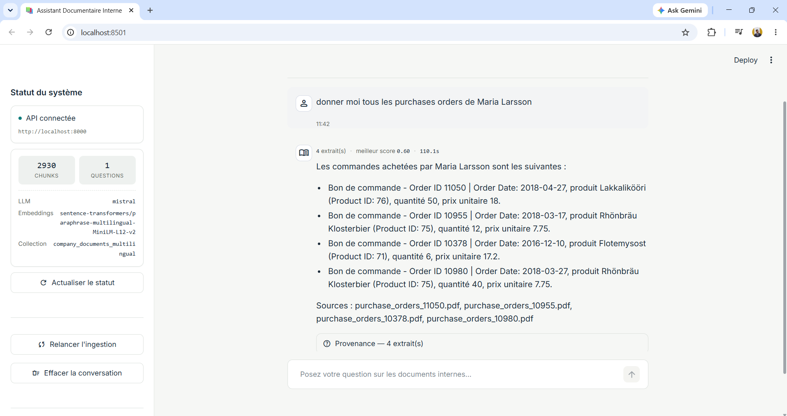
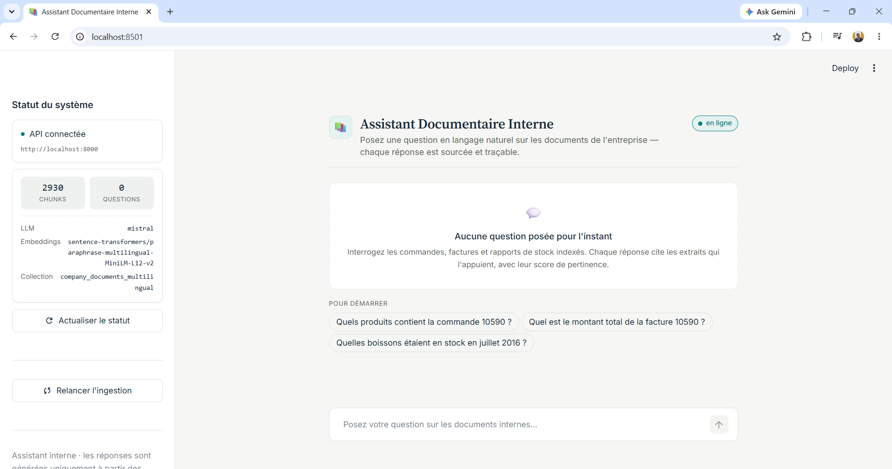

Un système RAG (Retrieval-Augmented Generation) qui permet d'interroger en langage naturel les documents d'une entreprise — factures, bons de commande, rapports — et d'obtenir des réponses générées par un LLM local, accompagnées de leurs sources.
Interface Streamlit connectée à l'API FastAPI, avec le modèle Mistral exécuté via Ollama.


Deux phases découplées : l'indexation hors ligne, puis l'interrogation en temps réel.
/queryAucune donnée ne quitte l'infrastructure : pas d'API externe ni de clé à fournir.
Chaque réponse affiche les extraits utilisés et leur score de pertinence.
Modèles open source (Mistral, LLaMA) et embeddings locaux, sans coût récurrent.
Le moteur RAG est exposé par une API : n'importe quelle interface peut s'y brancher.
Scores mesurés sur le jeu de test annoté data/eval/testset.csv (de 0 à 1, plus c'est haut mieux c'est).
La réponse est fidèle au contexte récupéré (mesure des hallucinations).
La réponse traite bien la question posée.
Les extraits récupérés sont pertinents.
Toute l'information nécessaire a été retrouvée.
| Langage | Python 3.11+ |
|---|---|
| Orchestration RAG | LangChain |
| LLM | Ollama (Mistral 7B / LLaMA 3) |
| Embeddings | sentence-transformers (multilingue MiniLM) |
| Base vectorielle | ChromaDB |
| Évaluation | RAGAS |
| API / Interface | FastAPI · Streamlit |
| Déploiement | Docker / docker-compose |
Prérequis : Python 3.11+ et Ollama installé.
git clone https://github.com/NOT4TODAY1/Summer-internship-2026.git
cd Summer-internship-2026
pip install -r requirements.txt
ollama pull mistral
cp .env.example .env
python scripts/ingest_documents.py --source data/raw --reset
uvicorn src.api.main:app --host 0.0.0.0 --port 8000 # terminal 1
streamlit run src/app/streamlit_app.py # terminal 2 → http://localhost:8501Ou avec Docker : docker compose up --build puis docker exec -it rag-ollama ollama pull mistral.